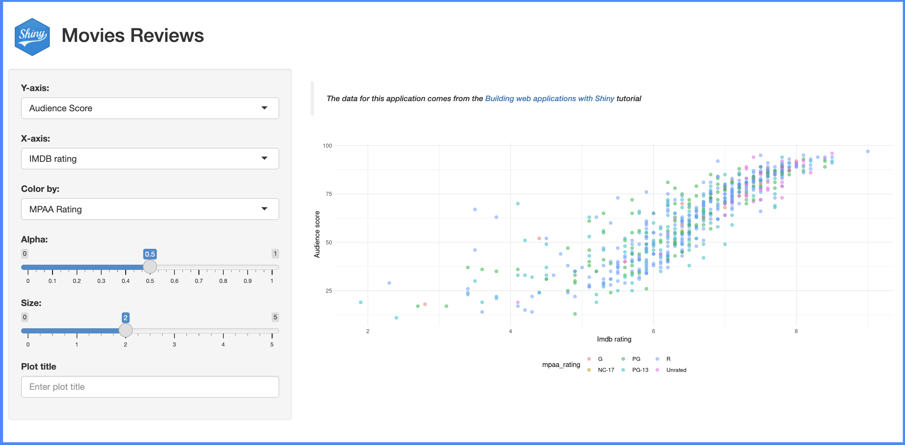

install.packages("shiny")
library(shiny)Shiny apps
Heads up!
This chapter is currently being revised. Thank you for your patience.
This chapter briefly reviews Shiny’s reactive model and how it differs from regular R programming. Then I’ll cover a few Shiny app development best practices outside of an R package structure.
Properly storing/using utility functions, data, documentation, metadata files, and converting your application code into functions will set you up for success as you transition to app-packages.
Shiny programming
Reactivity is the underlying process that allows Shiny apps to update and respond to user interactions automatically. Developing Shiny apps involves harnessing the connection between inputs, reactivity, and outputs to control and predict the application’s behavior.
Shiny programming differs from regular R programming in several key aspects:
-
An Event-driven UI: Shiny apps require developers to design and develop a user interface (UI). User experience (UX) design is an entirely separate field, but as Shiny developers, we need to know enough to allow users to interact with and navigate our apps. The UI also captures each ‘event,’ meaning that the user’s actions (such as button clicks or input changes) trigger inputs, updates, or outputs in the application.
- Regular R programming often involves executing predefined steps or functions without direct interaction or responses to user events.
-
A Reactive Server: In Shiny, the application’s behavior is determined by the dependencies between reactive inputs (i.e., the
inputIds), reactive values, and outputs (i.e., theoutputIds), allowing for automatic updates and propagation of changes throughout the application.- In standard R programming, we typically define a series of sequential steps (i.e., functions) that operate on data to generate output to the console or a typesetting system for technical and scientific publications (model results, graphs, tables, etc.) without accounting for reactivity or downstream changes.
Learning reactivity can be challenging when you start, but fortunately, there are excellent tutorials and articles to help you along the way!
New shiny app projects
If you’re creating a new application using the New Project Wizard, you’ll see the following:

After selecting the location of your shiny app project, you can pick a name and decide whether you want to use Git or renv.

After clicking Create Project, a new session will open with your project files.
Shiny app project contents
Note that the only items in the new shiny app project are app.R and the projApp.Rproj file.
projApp/
├── app.R
└── projApp.Rproj
1 directory, 2 filesapp.R
app.R initially contains a boilerplate application, which we can launch by clicking on the Run App button:


The Old Faith Geyser Data application is a great start, but we will exchange this code for a slightly more advanced application (because most shiny apps grow beyond the boilerplate code in app.R).
Movie review app
The application we’re going to place in app.R comes from the Building Web Applications with Shiny course. I’ve chosen to use this app for the following reasons:
Multiple input types are collected in the UI
An output that can be created with a utility function
The app loads an external data file when it’s launched
Each of these features provide an opportunity to explore some of the methods shiny apps have for running code and loading external files.
App
app.R
Replace the Old Faith Geyser Data app in app.R with the code below:
show/hide movie review shiny app
ui <- shiny::fluidPage(theme = shinythemes::shinytheme("spacelab"),
shiny::sidebarLayout(
shiny::sidebarPanel(
shiny::selectInput(
inputId = "y",
label = "Y-axis:",
choices = c(
"IMDB rating" = "imdb_rating",
"IMDB number of votes" = "imdb_num_votes",
"Critics Score" = "critics_score",
"Audience Score" = "audience_score",
"Runtime" = "runtime"
),
selected = "audience_score"
),
shiny::selectInput(
inputId = "x",
label = "X-axis:",
choices = c(
"IMDB rating" = "imdb_rating",
"IMDB number of votes" = "imdb_num_votes",
"Critics Score" = "critics_score",
"Audience Score" = "audience_score",
"Runtime" = "runtime"
),
selected = "critics_score"
),
shiny::selectInput(
inputId = "z",
label = "Color by:",
choices = c(
"Title Type" = "title_type",
"Genre" = "genre",
"MPAA Rating" = "mpaa_rating",
"Critics Rating" = "critics_rating",
"Audience Rating" = "audience_rating"
),
selected = "mpaa_rating"
),
shiny::sliderInput(
inputId = "alpha",
label = "Alpha:",
min = 0, max = 1,
value = 0.4
),
shiny::sliderInput(
inputId = "size",
label = "Size:",
min = 0, max = 5,
value = 3
),
shiny::textInput(
inputId = "plot_title",
label = "Plot title",
placeholder = "Enter text to be used as plot title"
),
shiny::actionButton(
inputId = "update_plot_title",
label = "Update plot title"
)
),
shiny::mainPanel(
shiny::br(),
shiny::p(
"These data were obtained from",
shiny::a("IMBD", href = "http://www.imbd.com/"), "and",
shiny::a("Rotten Tomatoes", href = "https://www.rottentomatoes.com/"), "."
),
shiny::p("The data represent",
nrow(movies),
"randomly sampled movies released between 1972 to 2014 in the United States."),
shiny::plotOutput(outputId = "scatterplot"),
shiny::hr(),
shiny::p(shiny::em("The code for this shiny application comes from",
shiny::a("Building Web Applications with shiny",
href = "https://rstudio-education.github.io/shiny-course/"))
)
)
)
)
server <- function(input, output, session) {
new_plot_title <- shiny::reactive({
tools::toTitleCase(input$plot_title)
}) |>
shiny::bindEvent(input$update_plot_title,
ignoreNULL = FALSE,
ignoreInit = FALSE)
output$scatterplot <- shiny::renderPlot({
scatter_plot(
df = movies,
x_var = input$x,
y_var = input$y,
col_var = input$z,
alpha_var = input$alpha,
size_var = input$size
) +
ggplot2::labs(title = new_plot_title()) +
ggplot2::theme_minimal() +
ggplot2::theme(legend.position = "bottom")
})
}
shiny::shinyApp(ui = ui, server = server)Utility function
utils.R
Place the scatter_plot() utility function in new utils.R file
show/hide scatter_plot()
scatter_plot <- function(df, x_var, y_var, col_var, alpha_var, size_var) {
ggplot2::ggplot(data = df,
ggplot2::aes(x = .data[[x_var]],
y = .data[[y_var]],
color = .data[[col_var]])) +
ggplot2::geom_point(alpha = alpha_var, size = size_var)
}Data
movies.RData
Download the movies dataset here and upload movies.RData to the project.
Updated movies app project contents
The projApp project now contains the following files:
projApp/
├── app.R
├── movies.RData
├── projApp.Rproj
└── utils.R
2 directories, 4 filesTo run the movies app, we need to make sure to load the data and source the utils.R file. We’ll add this code to the top of the app.R file:
If you already have those packages installed, comment those lines out.
# install ------------------------------------
# after installing, comment this out
pkgs <- c("shiny", "shinythemes", "stringr", "ggplot2", "rlang")
install.packages(pkgs, verbose = FALSE)
# packages ------------------------------------
library(shiny)
library(shinythemes)
library(stringr)
library(ggplot2)
library(rlang)
# data -----------------------------------------
load("movies.RData")
# utils ----------------------------------------
source("utils.R")When I click on Run App, I see our new shiny application:

movies appmovies app
The code for this section was pushed to the [02_movies-app] branch of the [projApp] repo.
Project folders
Below I’ll cover a few folders that have built-in special behaviors when included in a shiny application project. Using these folders will help organize your files and make additional resources available to your app.
Following the conventional folder structure will also help set you up for success when/if you decide to convert it into an app-package.
Copy into
projApp
If you’re following along, these callout boxes contain code or contents that have been included in projApp
R/
If your shiny app relies on utility or helper functions (outside the app.R file), you can place this code in an R/ folder. Any .R files in the R/ folder will be automatically sourced when the application is run.
I’ve moved the utils.R file into the R/ folder in projApp:
R/ folder
projApp/
└── R/
└── utils.R
1 directory, 1 filewww/
When you run a shiny application, any static files (i.e., resources) under a www/ directory will automatically be made available within the application. Use this folder to store images, CSS or JavaScript files, and other static resources.
www/ folder
We’ll download a logo (shiny.png) and store it in the www/ folder.
{kind=link}
projApp/
└── www/
└── shiny.png
1 directory, 1 fileIn the section below, we’ll reference it directly in the UI.
Project files
README.md
Including a README.md file in your root folder is a good practice for any project. README.md should contain relevant documentation for running app.R.
README.md
I’ve included the content below in README.md
# movies app
The original code and data for this shiny app comes from the [Building Web Applications with Shiny](https://rstudio-education.github.io/shiny-course/) course. It's been converted to use [shiny modules](https://shiny.posit.co/r/articles/improve/modules/).
View the code for this application in the [`projApp` branches](https://github.com/mjfrigaard/projApp/branches/).DESCRIPTION
DESCRIPTION files play an essential role in R packages, but they are also helpful in Shiny projects if I want to deploy the app in showcase mode.
DESCRIPTION
I’ve included the content below in DESCRIPTION:
Type: shiny
Title: movies app
Author: John Smith
DisplayMode: Showcase
<empty final line> <- delete me but leave an empty final line!It’s always a good idea to leave at least one <empty final line> in your DESCRIPTION file.
After adding README.md and a DESCRIPTION file (listing DisplayMode: Showcase), the movies app will display the code and documentation when the app launches:

movies app (showcase)showcase mode hereProject code
The following two items are considered best practices because they make your app more scalable by converting app.R into functions.
Modules
Shiny modules are ‘a pair of UI and server functions’ designed to compartmentalize input and output IDs into distinct namespaces,
‘…a namespace is to an ID as a directory is to a file…’ -
shiny::NS()help file
Module UI functions typically wrap the layout, input, and output functions in shiny::tagList(). Module server functions typically contain the ‘backend’ code in a shiny server function. Both the UI and server module functions are linked by an id argument, which is created using shiny::NS() (namespace) in the UI function, and called in the server function with shiny::moduleServer().
Variable inputs (mod_var_input)
mod_var_input_ui() creates a dedicated namespace for the inputIds with shiny::NS():
mod_var_input
show/hide mod_var_input_ui()
mod_var_input_ui <- function(id) {
ns <- shiny::NS(id)
shiny::tagList(
shiny::selectInput(
inputId = ns("y"),
label = "Y-axis:",
choices = c(
"IMDB rating" = "imdb_rating",
"IMDB number of votes" = "imdb_num_votes",
"Critics Score" = "critics_score",
"Audience Score" = "audience_score",
"Runtime" = "runtime"
),
selected = "audience_score"
),
shiny::selectInput(
inputId = ns("x"),
label = "X-axis:",
choices = c(
"IMDB rating" = "imdb_rating",
"IMDB number of votes" = "imdb_num_votes",
"Critics Score" = "critics_score",
"Audience Score" = "audience_score",
"Runtime" = "runtime"
),
selected = "imdb_rating"
),
shiny::selectInput(
inputId = ns("z"),
label = "Color by:",
choices = c(
"Title Type" = "title_type",
"Genre" = "genre",
"MPAA Rating" = "mpaa_rating",
"Critics Rating" = "critics_rating",
"Audience Rating" = "audience_rating"
),
selected = "mpaa_rating"
),
shiny::sliderInput(
inputId = ns("alpha"),
label = "Alpha:",
min = 0, max = 1, step = 0.1,
value = 0.5
),
shiny::sliderInput(
inputId = ns("size"),
label = "Size:",
min = 0, max = 5,
value = 2
),
shiny::textInput(
inputId = ns("plot_title"),
label = "Plot title",
placeholder = "Enter plot title"
)
)
}mod_var_input_server() returns these values in reactive list with shiny::reactive():
mod_var_input_server
show/hide mod_var_input_server()
mod_var_input_server <- function(id) {
shiny::moduleServer(id, function(input, output, session) {
return(
list(
"x" = shiny::reactive({
input$x
}),
"y" = shiny::reactive({
input$y
}),
"z" = shiny::reactive({
input$z
}),
"alpha" = shiny::reactive({
input$alpha
}),
"size" = shiny::reactive({
input$size
}),
"plot_title" = shiny::reactive({
input$plot_title
})
)
)
})
}Scatter-plot display (mod_scatter_display)
mod_scatter_display_ui() creates a dedicated namespace for the plot outputId (as "scatterplot"), along with some help text:
mod_scatter_display_ui
show/hide mod_scatter_display_ui()
mod_scatter_display_ui <- function(id) {
ns <- shiny::NS(id)
shiny::tagList(
shiny::tags$br(),
shiny::tags$blockquote(
shiny::tags$em(
shiny::tags$h6("The data for this application comes from the ",
shiny::tags$a("Building web applications with Shiny",
href = "https://rstudio-education.github.io/shiny-course/"),
"tutorial"))
),
shiny::plotOutput(outputId = ns("scatterplot"))
)
}The code to render the output$scatterplot is contained in the nested call to shiny::moduleServer() in mod_scatter_display_server():
After loading the movies data and collecting the returned values from mod_var_input_server(), and creating the input() reactive, the scatter_plot() utility function creates the plot object and adds the plot_title():
mod_scatter_display_server
show/hide mod_scatter_display_server()
mod_scatter_display_server <- function(id, var_inputs) {
shiny::moduleServer(id, function(input, output, session) {
# data --------------------------------------------------------------------
load("movies.RData")
inputs <- shiny::reactive({
plot_title <- tools::toTitleCase(var_inputs$plot_title())
list(
x = var_inputs$x(),
y = var_inputs$y(),
z = var_inputs$z(),
alpha = var_inputs$alpha(),
size = var_inputs$size(),
plot_title = plot_title
)
})
output$scatterplot <- shiny::renderPlot({
plot <- scatter_plot(
df = movies,
x_var = inputs()$x,
y_var = inputs()$y,
col_var = inputs()$z,
alpha_var = inputs()$alpha,
size_var = inputs()$size
)
plot +
ggplot2::labs(
title = inputs()$plot_title,
x = stringr::str_replace_all(tools::toTitleCase(inputs()$x), "_", " "),
y = stringr::str_replace_all(tools::toTitleCase(inputs()$y), "_", " ")
) +
ggplot2::theme_minimal() +
ggplot2::theme(legend.position = "bottom")
})
})
}Both UI and server module functions are combined into a single module .R file and all modules are placed in the R/ folder so they are sourced when the application is run.
R/
├── mod_scatter_display.R
├── mod_var_input.R
└── utils.RStandalone app function
Both module functions are combined in the ui and server arguments of shiny::shinyApp(). The id arguments ("vars" and "plot") connect the UI functions to their server counterparts, and the output from mod_var_input_server() is the var_inputs argument in mod_scatter_display_server().
The call to shiny::shinyApp() is wrapped in the movies_app() function and placed in app.R
movies_app()
show/hide movies_app() in app.R
# install ------------------------------------
# after installing, comment this out
pkgs <- c("shiny", "shinythemes", "stringr", "ggplot2", "rlang")
install.packages(pkgs, verbose = FALSE)
# packages ------------------------------------
library(shiny)
library(shinythemes)
library(stringr)
library(ggplot2)
library(rlang)
movies_app <- function() {
shiny::shinyApp(
ui = shiny::fluidPage(
shiny::titlePanel(
shiny::div(
shiny::img(
src = "shiny.png",
height = 60,
width = 55,
style = "margin:10px 10px"
),
"Movies Reviews"
)
),
shiny::sidebarLayout(
shiny::sidebarPanel(
mod_var_input_ui("vars")
),
shiny::mainPanel(
mod_scatter_display_ui("plot")
)
)
),
server = function(input, output, session) {
selected_vars <- mod_var_input_server("vars")
mod_scatter_display_server("plot", var_inputs = selected_vars)
}
)
}
movies_app()I can run the app with movies_app().

The files in the 03_projApp repo are below:
projApp/ # 03_projApp branch
├── DESCRIPTION
├── R/
│ ├── mod_scatter_display.R
│ ├── mod_var_input.R
│ └── utils.R
├── README.md
├── app.R
├── movies.RData
├── projApp.Rproj
├── rsconnect/
│ └── shinyapps.io/
│ └── user/
│ └── projApp.dcf
└── www/
└── shiny.png
6 directories, 10 files
The code for this section was pushed to the [03_projApp] branch of the [projApp] repo.
Project dependencies
renv
If you use renv, keep track of your dependencies by regularly running renv::status() and renv::snapshot().
Using
renv
Start by initiating renv with renv::init(), then run renv::status() to check which packages have been added to the lockfile:
renv::status()show/hide example renv::status() output
The following package(s) are in an inconsistent state:
package installed recorded used
colorspace y n y
fansi y n y
farver y n y
ggplot2 y n y
gtable y n y
isoband y n y
labeling y n y
lattice y n y
MASS y n y
Matrix y n y
mgcv y n y
munsell y n y
nlme y n y
pillar y n y
pkgconfig y n y
RColorBrewer y n y
scales y n y
shinythemes y n y
tibble y n y
utf8 y n y
vctrs y n y
viridisLite y n y Take a ‘snapshot’ to capture the current package dependencies:
renv::snapshot()show/hide example renv::snapshot() output
The following package(s) will be updated in the lockfile:
# CRAN --------------------------------------------------
- lattice [* -> 0.21-8]
- MASS [* -> 7.3-60]
- Matrix [* -> 1.5-3]
- mgcv [* -> 1.8-42]
- nlme [* -> 3.1-162]
- vctrs [* -> 0.6.3]
# RSPM --------------------------------------------------
- colorspace [* -> 2.1-0]
- fansi [* -> 1.0.4]
- farver [* -> 2.1.1]
- ggplot2 [* -> 3.4.2]
- gtable [* -> 0.3.3]
- isoband [* -> 0.2.7]
- labeling [* -> 0.4.2]
- munsell [* -> 0.5.0]
- pillar [* -> 1.9.0]
- pkgconfig [* -> 2.0.3]
- RColorBrewer [* -> 1.1-3]
- scales [* -> 1.2.1]
- shinythemes [* -> 1.2.0]
- tibble [* -> 3.2.1]
- utf8 [* -> 1.2.3]
- viridisLite [* -> 0.4.2]
Do you want to proceed? [Y/n]: y
- Lockfile written to '~/path/to/projApp/renv.lock'.Recap
This chapter has covered some of the differences between developing shiny apps and regular R programming, creating new shiny projects in Posit Workbench, and some practices to adopt that can make the transition to app-packages a little easier. The code used in this chapter are stored in the projApp repository.
Recap
Placing any utility or helper files in an
R/folder removes the need to callsource()inapp.RImages, CSS, JavaScript, and other static resources can be stored in
www/and shiny will serve these files when the application is run.README.mdfiles can can be used to document application description, purpose, requirements, etc.DESCRIPTIONfiles provide metadata and includes fields that affect application deployment (i.e.,DisplayMode: Showcase)Converting the application code into functions (modules and standalone app functions) creates a ‘division of labor’ for each component, which makes it easier to think about and work on them independently.
Finally, if you’re using
renv, runrenv::status()andrenv::snapshot()to manage dependencies
In the next chapter, I’ll cover what makes a package a package, and some do’s and don’ts when converting a developed shiny application into an R package.
end shiny.qmd